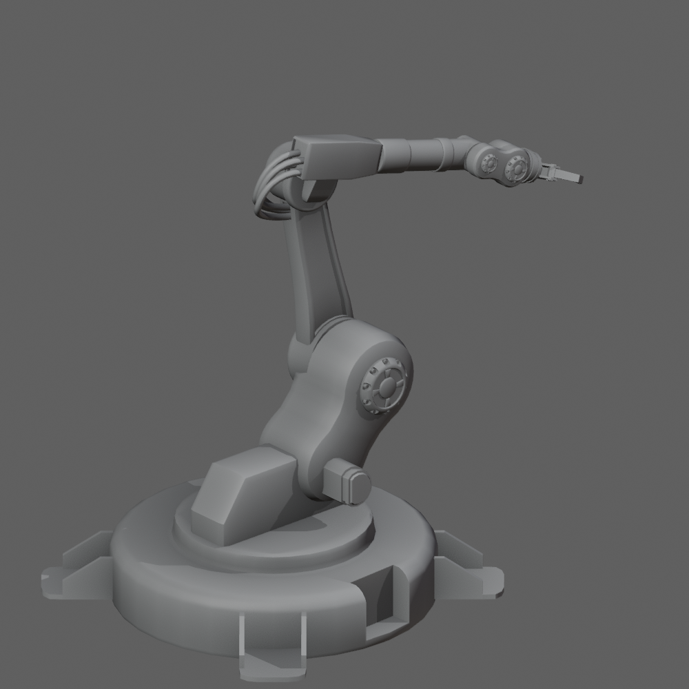
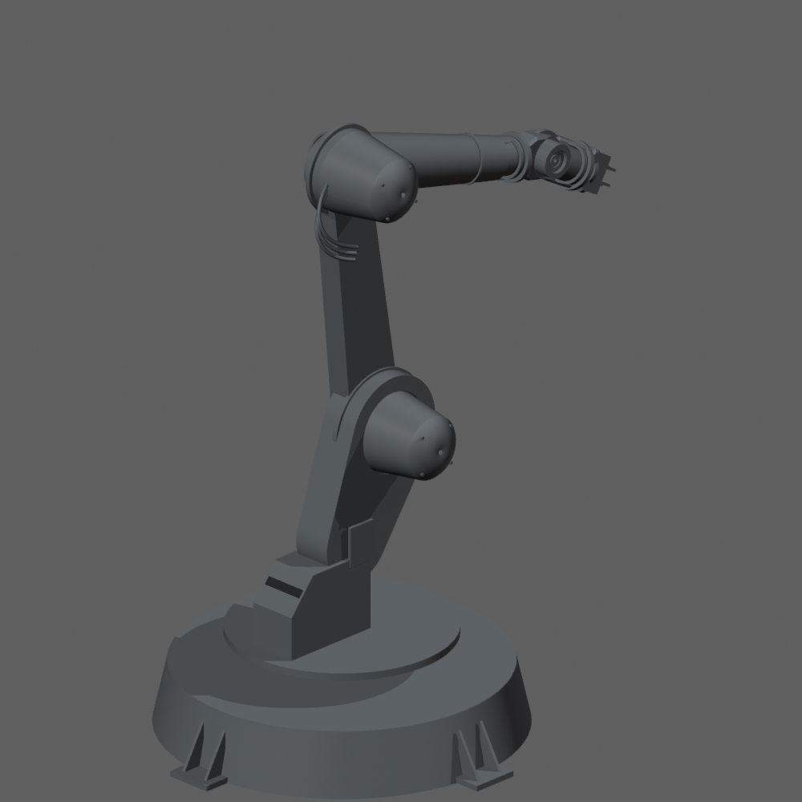
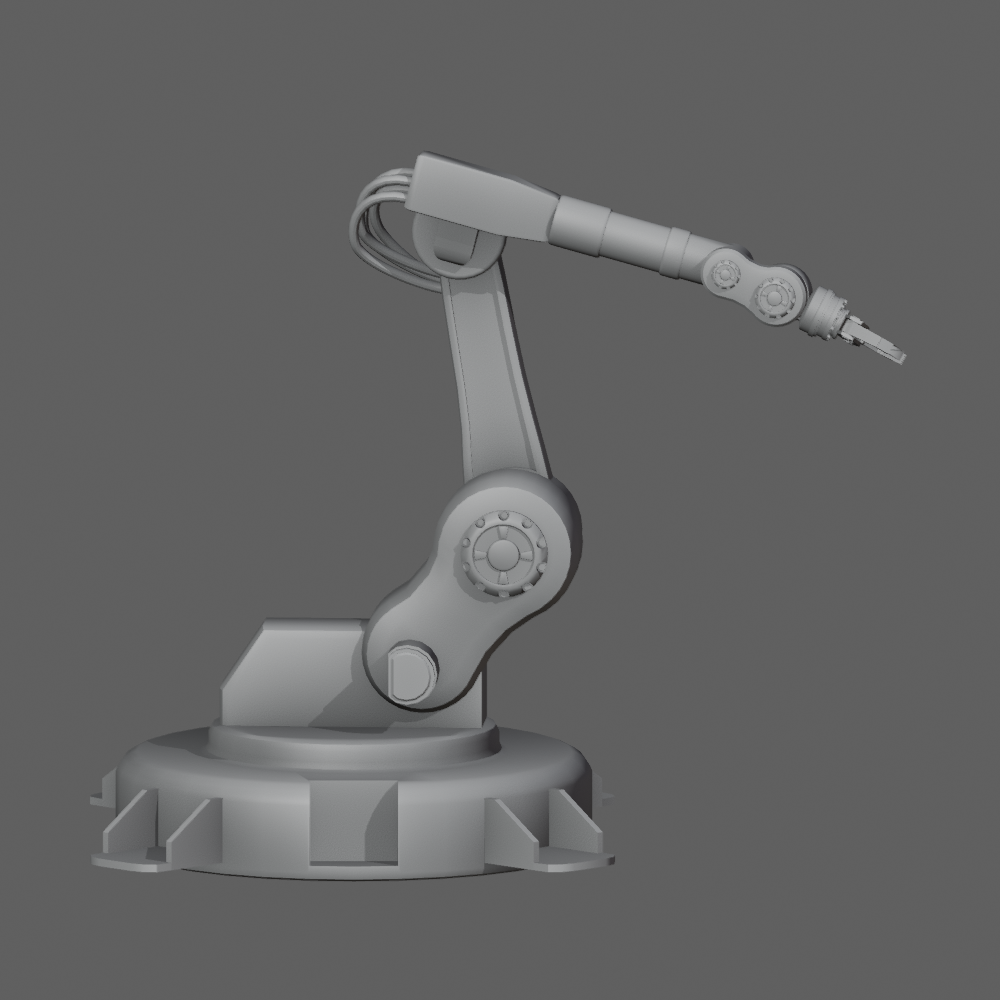
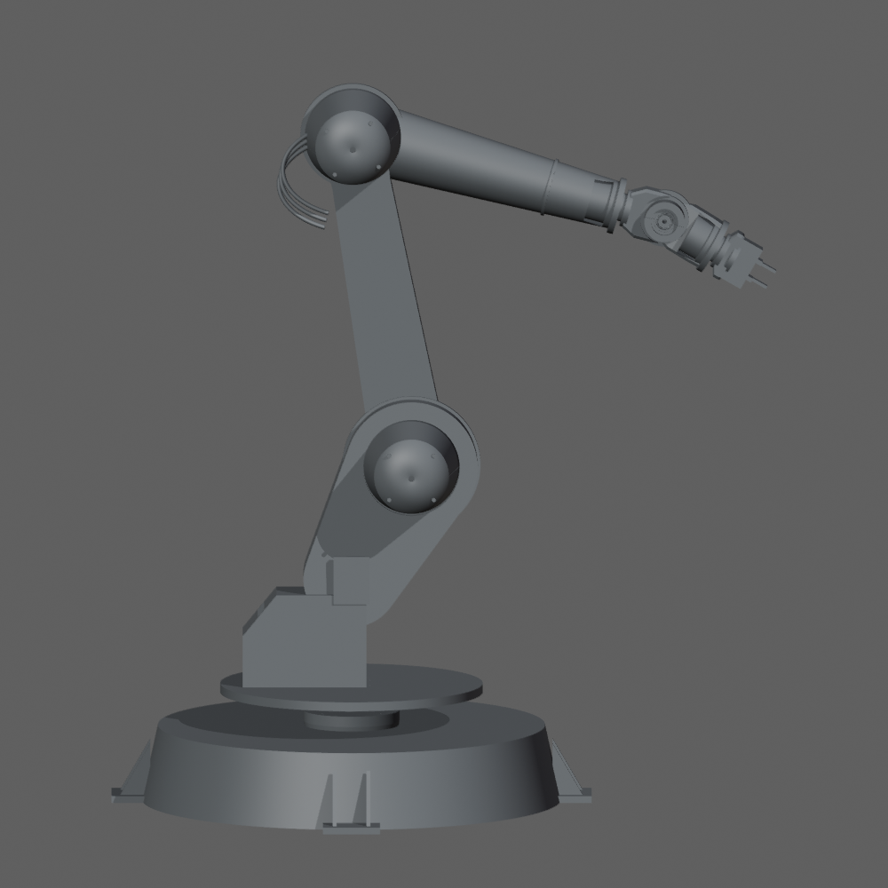
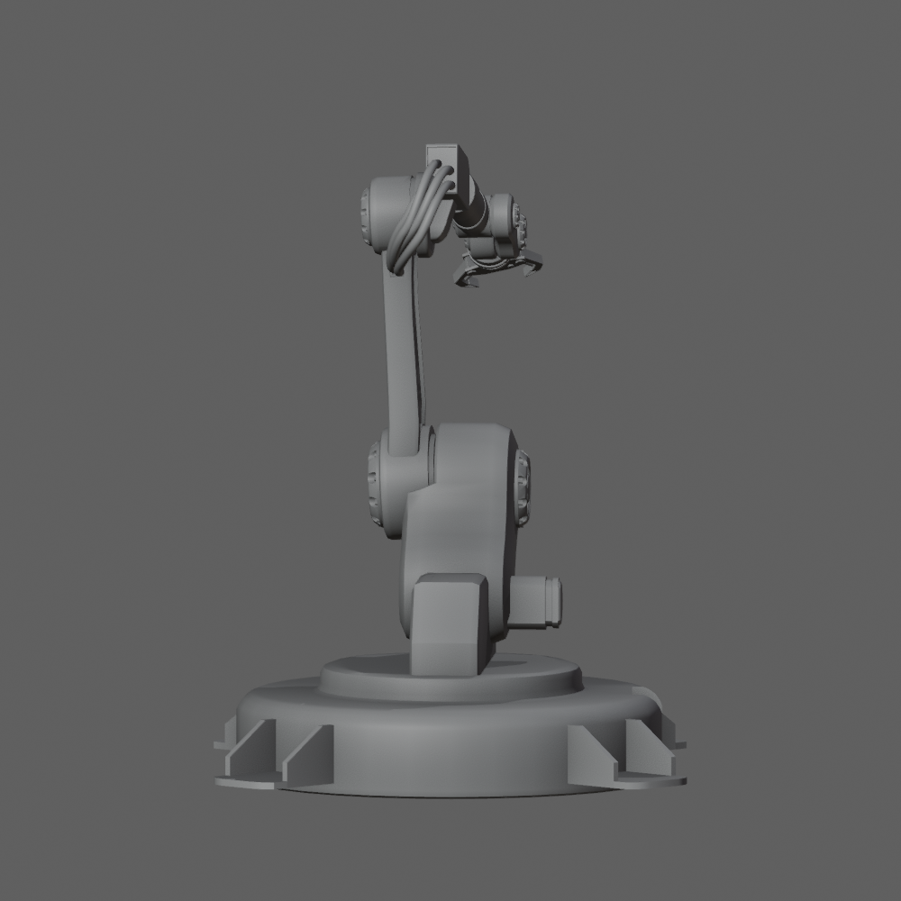
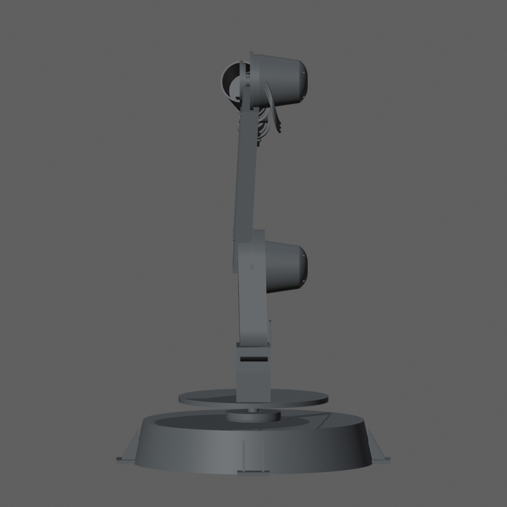

Игровая модель задаёт только внешний вид. Справа — независимые CAD-тела. Камеры одного направления; каждый кадр отдельно вписан по габаритам. Это предварительная компоновка без допуска к изготовлению. Ограничения.





